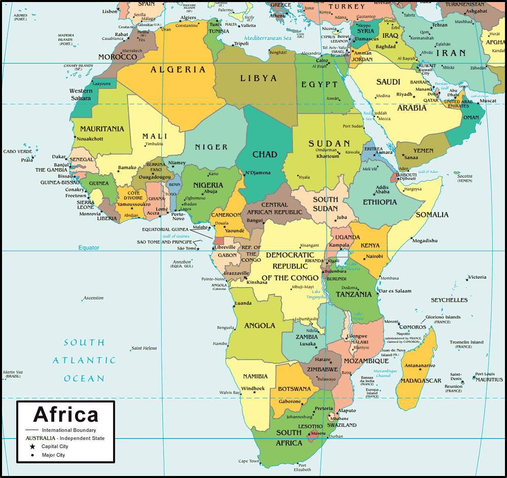

Africa
About Africa
Africa is the world's second-largest and second-most populous continent, after Asia in both cases. At about 30.3 million km² including adjacent islands, it covers 6% of Earth's total surface area and 20% of its land area. With 1.3 billion people as of 2018, it accounts for about 16% of the world's human population.Area: 30.37 million km²
Population density: 36.4 per km2 / 94 per square mile
Population: 1.216 billion (as of 2016)
(All Information Taken from Wikipedia)

Map of Africa